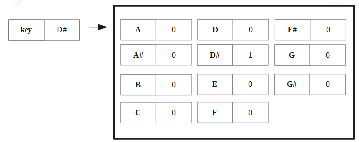
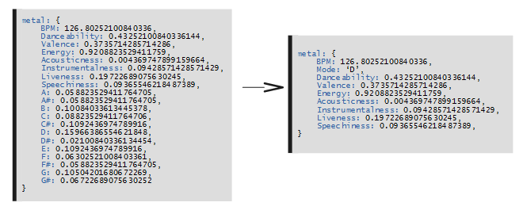

Dépôt github : https://github.com/aliegeois/data-mining-project/tree/master
Pour faciliter l'accès aux données, les 2 fichiers `playlists` et `tracks` sont fusionnés dans une seule structure de données. Ceci est plus pratique pour accéder aux propriétés des musiques depuis la playlist.
La structure de données utilisée est du JSON sous la forme suivante:
"fr": {
"https://www.spotontrack.com/track/la-marcheuse/42943174": {
title: "La marcheuse",
…
positions: [{
date: 2018-09-26T00:00:00.000Z,
position: 2
}, {
date: 2018-10-03T00:00:00.000Z,
position: 3
}, …]
},
"https://www.spotontrack.com/track/mojo/43473376": {
…
},
…
},
"jazz": {
…
},
"lovepop": {
…
},
"electro": {
…
},
"metal": {
…
}
Cette structure nous permet de séparer les différentes playlists, ainsi l'appel à `data.fr` renvoie toutes les chansons de la playlist fr.
Cette stratégie induit le fait que ces données seront dupliquées dans le cas où une musique est présent dans plusieurs playlist (puisque les données relatives à la musique sont associée à une playlist spécifique). Toutefois, après une étude de données, nous n’avons trouvé aucune occurrence d’une telle musique. Si elle existe, elle semble n’arriver que très rarement, et le nombre de duplications engendrées serra alors négligeable (et ne mettra pas en péril les opérations effectuées sur les données).
A ce stade, nous nous sommes dit que cette structure nous permettait d’y ajouter les données de tracks/ En effet, chacune est spécifique à un url et peut donc s’ajouter avec au coté du title. Nous avons donc ajouté les données de Dancabilité, valence…
"fr": {
"https://www.spotontrack.com/track/la-marcheuse/42943174": {
"title": "La marcheuse",
"artists": "Christine and the Queens",
"BPM": 107,
…
positions: [{
date: 2018-09-26T00:00:00.000Z,
position: 2
}, {
date: 2018-10-03T00:00:00.000Z,
position: 3
}, …]
},
"https://www.spotontrack.com/track/mojo/43473376": {
…
},
…
},
"jazz": {
…
},
"lovepop": {
…
},
"electro": {
…
},
"metal": {
…
}
La création des cette structure est comprise dans la fonction parseData
/\\u[0-9a-f]{4}/g détecte les codes des caractères accentués et il est en suite facile de les convertir.
Afin de calculer la position-pic de chaque chanson, il nous suffit de parcourir la structure de données évoquées via des itérateurs natifs de JavaScript :
- Pour chaque playlist
- Pour chaque chanson de cette playlist
- On initialise la meilleure position à l’entier maximal
- Pour chaque position de cette chanson
- On modifie la meilleure position si la position trouvée est meilleure que la meilleure position-pic
- On retourne la structure adaptée
En JavaScript, nous parcourons notre structure avec des for de cette manière :
Si data est, par exemple, de cette forme :
Nous aurons alors, pour le premier tour de boucle, playlist = « fr » et songs égal à la structure contenant url1, url2... (chaque url étant alors itérable de la même manière). Au deuxième tour nous aurons playlist = « electro »…
Il est également possible de ne récupérer que playlist en utilisant key au lieu entries, et uniquement songs en utilisant plutôt values.
Pour associer un booléen à chaque chanson indiquant si elle a été au moins une fois au dessus de la 15ème position dans une playlist, nous parcourons simplement le tableau de positionPic issu de la question précédente avec le même type d’itérateur que défini plus haut et associons un booléen à l’url selon que la position moyenne qui lui est associé est inférieure à 15 ou non.
La structure de données choisie est particulièrement utile pour calculer cette statistique : en effet, nous avons déjà pour chaque chanson, un tableau contenant toutes ces positions avec les dates associées. Nous pouvons donc simplement parcourir notre structure et, pour chaque chanson, lui associer la taille de son tableau de positions.
Pour réaliser cette statistique, nous parcourons à nouveau notre structure avec les opérateur utilisées pour les questions précédente. Encore une fois, seul l’opération effectuée avec la liste des postions change : ici, nous parcourons le tableau pour réaliser la sommes des positions et divisons par la taille du tableau de positions.
A noter que nous avons choisi, par goûts personnel d’utiliser un reduce afin de sommer les éléments du tableau, mais il es tout à fait possible de réaliser un for classique.
Pour calculer cette statistique, nous utilisons le même procédé que pour déterminer si la position-pic est inférieure à 15, mais utilisons cette fois-ci ce que nous renvoie la fonction getMeanPositions.
Certains données ne sont pas adaptées pour l’analyse : il s’agit de le key et le mode. En effet, ces derniers son des variables catégorique, il faut donc les transformer.
Transformation du mode : le mode ne peut prendre que deux valeurs : Minor ou Major. Nous avons donc pu transformer cette variable en booléen : 1 pour un mode majeur et 0 pour un mode mineur
Transformation de la key : la key en revanche peut prendre énormément de valeurs (12). Pour régler ce problème, il nous faut créer une colonne pour chaque valeur possible ; colonne pouvant prendre comme valeur soit 1 (si la key est bien de cette valeur), soit 0 (si elle ne l’est). Chaque musique possédera donc une colonne à 1, et 11 colonnes à 0.
Afin de pouvoir effectuer des calculs intéressant, il nous faut avoir accès à des données telles que la moyenne pour chaque variable, l’écart-type… Le JavaScript natif ne proposant pas de telles fonctionnalités, il nous a fallut réaliser des fonctions calculant ces statistiques à la main. L’idée est assez simple : nous parcourons notre structure de données et utilisons les formules classiques de moyenne, écart-type…
Le calcul de ces statistiques est défini dans la fonction getStats.
Nous avons codé celle-ci de manière à ce qu’elle renvoi un objet contenant pour chaque playlist, pour chaque variable toutes les statistiques associées (moyenne, écart-type, variance...)
Liste des variables, dans l'ordre: BPM, Mode, Danceability, Valence, Energy, Acousticness, Instrumentalness, Liveness et Speechiness
AnalyseEn réalisant la moyenne sur chaque valeur pour toute les chansons d’un playlist, nous pouvons établir le profil type de la chanson de la playlist (c’est celle ayant toutes ses valeurs égales à la moyenne).
Pour réaliser cela, nous récupérons les données renvoyées par getStats et ne considérons que les moyennes associées à la playlist de notre choix. Nous ne pouvons malheureusement pas renvoyer directement les moyennes comme cela à cause des 12 colonnes de key. En effet, celle-ci ont une moyenne entre 0 et 1 (et plus proche de 0 car uniquement 1 variables sur 12 est égal à 1 à chaque fois). Hors, une musique, même moyenne, ne peut avoir que des 0 ou des 1 pour cette variable. Nous avons donc choisi de trouver la colonne key avec la valeur moyenne la plus haute, de mettre à 1 la colonne key de la chanson moyenne de cette key, et de mettre toutes les autres à 0.
De cette manière, nous pouvons établir le profil type de la chanson moyenne.
Pour calculer les chansons les plus proches de ces chansons types, nous calculons la distance euclidienne des musiques par rapport à la chansons moyenne. Toutefois, à ce stade, les variables n’étaient pas utilisables pour faire des statistiques avancées car elles n’étaient pas comparables : le BPM, par exemple, peut aisément monter à plus de 100 alors que les variables définies si dessous ne peuvent intrinsèquement pas dépasser 1. Il nous faut donc réaliser une normalisation sur les variables afin de pouvoir calculer des distances euclidiennes.
Méthode de normalisation : Pour chaque valeur, nous lui soustrayons la moyenne afin qu’elles soient toutes centrées autour de 0, puis nous divisons par l’écart type afin que toutes les variables soient dans un intervalle à la même échelle.
Nous avons donc dû pour cela créer des bouts de codes s’occupant de calculer la moyenne pour chaque valeur (sommes toute les valeurs et divise par la taille du tableau associé) et l’écart type (explications), puis normalisant les valeurs grâce aux statistiques trouvées.
La chanson la mieux classée au sens de la position moyenne est définie comme la musique est la position moyenne la plus faible. Pour cela, nous utilisons la structure indiquant pour chaque playlist, pour chaque url sa position moyenne (celle-ci est calculée par la fonction getMeanPositions).
Nous parcourons donc la structure et, pour chaque playlist, parcourons toutes les musique et gardons celle avec la position moyenne la plus basse. Nous renvoyons finalement l’objet associant la playlist à sa « meilleure musique ».
La structure de données avec laquelle nous travaillons associe déjà une musique avec la liste de ses positions au fil du temps. La fonction retournant la liste des positions d’une musique (associée aux dates correspondantes) est donc triviale : nous nous contentons de retourner le champs « positions » associé à la playlist et à la musique demandées :
On a actuellement 21 variables différentes (dont 12 uniquement pour la key). On désire désormais pouvoir projeter les chansons décrites par toutes ces variables sur un plan. Un plan étant en deux dimensions, il nous faut donc effectuer une réduction de dimensions afin de passer de 21 variables à 2. Il convient donc de déterminer les deux dimensions à garder, ou s’il faut créer deux dimensions représentant une agrégation des autres variables.
Nous pourrions réaliser cela à la main, et ne garder, par exemple, que les deux dimensions avec la plus grande variance. Toutefois, cette modèle ne sont semble pas satisfaisante, pas trop imprécis et ne rendant pas réellement compte de l’impact que peuvent l’avoir les variables sur une chansons.
Nous avons donc décidé d'utiliser la bibliothèque pca-js réalisant l'ACP en créant deux dimensions adéquates pour représenter les chansons sur un plan
L'ACP donne des résultats très particuliers puisqu'on obtient graphiquement 2 ensembles séparés. Ceci est probablement dû au Mode qui prend une valeur binaire et qui sépare distinctement toutes les musiques ayant un mode majeur de celles ayant un mode mineur. Les 2 ensembles ont visiblement la même allure, ce qui laisse supposer que le mode n'a que peu d'influence sur les autres variables : chaque cluster représente simplement un des deux modes.